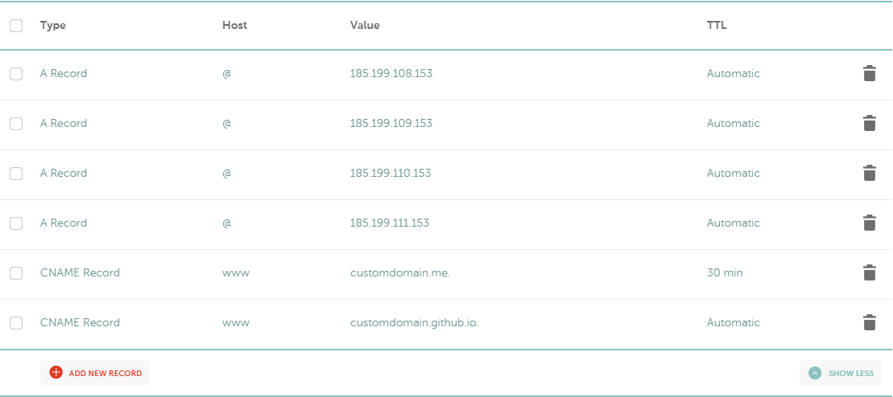

5 minutes
Hugo site on Github with domain from Namecheap
A personal website to showcase personal projects is one of the most important things a computer science student should have when they are searching for a job. This tutorial will serve all those students that are not well-versed in web development and want an easy way to set up their website in a fast manner.
Before Starting
With this tutorial I’m assuming you have an IDE such as VS Code or Sublime and a version control system such as Git. Also, you will need to create a GitHub account and Namecheap account to be able to perform instructions further down the line.
Setting Up
First, we should install Hugo with the help of the terminal. The code snippets for installing on Windows, Mac, or Linux respectively are below.
Windows with Chocolatey
choco install hugo -confirm
Install Chocolatey on Windows with Powershell
Set-ExecutionPolicy Bypass -Scope Process -Force; iex ((New-Object System.Net.WebClient).DownloadString('https://chocolatey.org/install.ps1'))
Mac with Homebrew
brew install hugo
Linux with Linuxbrew
brew install hugo
Further Instructions
The next steps can be found in the Hugo docs which will help you set up the environment in your OS of choice.
Your first Hugo site with a theme
This further instructions can also be accomplished with the respective terminal in your operating system, whether that is OS, Linux, or some other operating system.
Let’s set up your site first using the terminal. For this tutorial, we will be using Powershell on Windows 10. First, navigate to the Desktop directory and then follow the command below.
C:\Users\username\Desktop> hugo new site site-name
This should create a folder called site-name in your desktop with some boilerplate code.
Initializing repository and choosing a theme
To choose a theme, go to the Hugo themes webpage. If you only want to use the theme without any changes then run the following git commands to set up a git repository with a clone of the theme. For this tutorial, we will be using the Pulp theme.
git init
git clone https://github.com/koirand/pulp.git themes/pulp
If you want to make changes to the theme, the best solution is to download the theme from Github and manually adding it to the themes folder.
After initializing the repository and adding the theme, we need to configure the config.toml file in the site’s folder. We will do this by copy-pasting the config.toml file available in the theme’s folder.
Deploying to Github Pages
Now create an online new repository called [username].github.io and another repository called Personal-Website. The [username].github.io repository will host the HTML that will eventually be published to Github pages while the Personal-Website repository will host the Hugo files which will be used to generate the HTML files.
git remote add origin git@github.com:[github_username]/Personal-Website.git
git add -A
git commit -m "Initial commit for Hugo site"
git submodule add git@github.com:[github_username]/[github_username].github.io.git
git add -A
git commit -m "Initial commit for HTML code generated by Hugo"
git push -u origin master
After this, we need to change the config.toml file by changing the baseURL and publishDir variables to the Github page URL. This will look like this:
baseUrl = "https://[github_username].github.io/"
...
publishDir = "[github_username].github.io/"
Now, just generate the HTML files using the following command:
hugo
The last step is pushing the generated HTML files to Github by doing the following:
git add -A
git commit -m "HTML files generated and first iteration of personal website"
git push origin master
Now do the same thing in your main repository hosting the Hugo code
git add -A
git commit -m "First version of Hugo personal website"
git push origin master
Custom domain using Namecheap
This is an optional step.
To set up a custom domain for your Github page you first need a custom domain! My tool of choice is Namecheap as they offer free domains to people with edu email addresses. So navigate to the Namecheap main page, create an account, and buy a domain.
After getting your custom domain, navigate to your [username].github.io repository and click on the settings tab. Go to the “custom domain” section and input your domain in the text box provided.
Now, go back to Namecheap and navigate to your account’s dashboard. The domain you just bought should be there, click on the manage button at the right. From there, go to the Advanced DNS tab and copy the format of the image below.

As you can see, there are 4 A records with similar IP addresses, you should copy those into your dashboard as they are given my Github themselves. The last two are CNAME Records which should be different from the image and consist of your custom domain and your Github page domain.
Now, remember when we changed the baseUrl in the config.toml file? Go back to that and change the baseUrl to your custom domain. Repeat the steps after that by adding the files, committing, and pushing. NOTE: This can also be done in Github if you are feeling a bit lazy.
The last step is to add a file named “CNAME” to your [username].github.io repository and add your custom domain as the first line in the file. Note that when writing the text, the custom domain should just be the domain. No https, no slashes.
After waiting a couple of hours for the DNS to setup, your webpage should be ready. Congratulations!
If you have any questions or suggestions please feel free to email me.
Thanks for reading the guide!